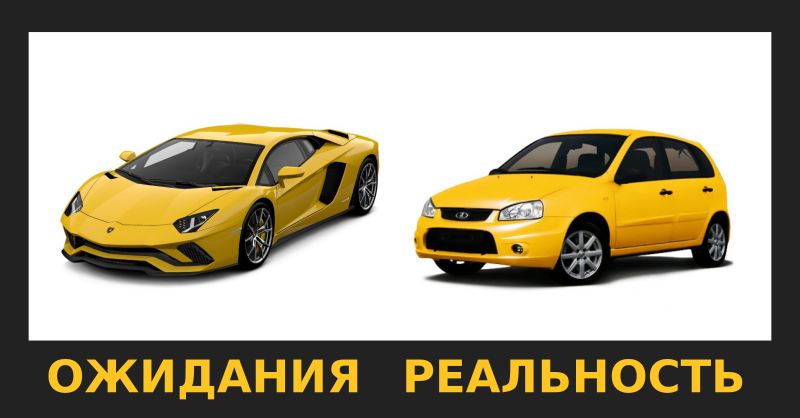

Про женскую внешность и шанс на знакомство

Под предыдущим постом развернулась дискуссия в контакте на тему внешности и шансов девушки познакомиться. Приведу ниже два комментария, оставленных разными людьми (с сохранением оригинальной пунктуации и орфографии):
Евгений, тоже интересно. -как человек заинтересовать, тут макияж и платья неважны. Как секс партнёрша- там модность платья уже не имеет значения. Единственный вариант "а ты бы ко мне на концерте не подошёл если бы я.."= первое впечатление при знакомстве когда зацепил объект взглядам.
Изначально большинство оценивает именно эту "раскраску". Там про принятие речи не идет. Просто выбор зачастую делается (в том числе и для отношений) вовсе не в пользу естественности. А потом появляются предъявы про меркантильных баб) Хотя ты ж видел, за что хватался. На самом деле вы просто не знаете иногда, что наша естественность - это результат качественного ухода за собой, а хорошие средства ухода стоят, как правило, не дешево :) Про принятие - с тем, кто меня не принимает, вряд ли что-то путнее получится.
О сути проблемы
Меня всегда удивляло существование предвзятого мнения о том, что если девушка заговорит с молодым человеком первой, то это является чем-то неприличным или неприемлимым вне зависимости от того, о чём и как она заговорит. На самом деле, насколько я знаю (в том числе исходя и из собственного опыта), молодые и не очень существа мужского пола крайне положительно реагируют на инициативу в общении со стороны девушек, что вышеобозначенным девушкам может дать сто очков против очередной муклы в миниюбке.
Конечно, всё зависит от того, что конкретным молодому человеку и девушке на текущий момент нужно. Если у него гормоны бьют фонтаном из ушей - тут бесспорно, её миниюбка и боевой раскрас будут вне конкуренции. Главное - чтобы цель знакомства совпадала.
Девушки же зачастую стараются привлечь противоположный пол, используя давление на инстинкты, а потом жалуются на то, что "мужикам только одно нужно". А чему тут удивляться? Что вы рекламировали, то они и ожидают получить. Мне кажется, Дядюшка Фрейд был прав, говоря о замене сознательного бессознательным. Молодой человек видит красоту неземную, заложенная в него природой программа размножения начинает работать и общение становится по большей части средством достижения вполне конкретной цели, даже если сам целящийся этого не осознаёт. Так устроено природой. Кто-то больше подвержен этому влиянию, кто-то меньше, но так или иначе, подвержены все.
Девушки пытаются выделиться на фоне потенциальных конкуренток, привлечь к себе как можно больше внимания и получить бОльшую свободу выбора среди тех, кто проявил к ним интерес - это тоже заложено природой и это нормально. Соответственно и используют для этого часто те средства, которые являются наиболее простыми и действенными - собственную внешность, например. Но это палка о двух концах.
Первое впечатление
Если считать верным, что первое впечатление, произведённое на человека - самое яркое и самое запоминающееся, то будьте готовы к тому, что в повседневной жизни вы можете постоянно проигрывать самой себе в сравнении с этим самым первым впечатлением, если оно существенно отличалось от того, которое вы производите обычно. Это впрочем, касается и мальчиков и девочек, но вторых в существенно бОльшей мере, так как разница между домашней Маней в тапочках и бигудях и секс-бомбой Маней на танцполе мягко говоря существенней, чем между Васей в футболке и джинсах дома и Васей в футболке и джинсах в клубе.
Для наглядности попробуйте набрать в поиске картинок в google запрос "девушки с макияжем и без". Приведу понятную аналогию, только не обижайтесь. Если человеку под видом Ламборгини продали Форд Фокус, он явно будет крайне разочарован, даже если заплатил столько, сколько должен был стоить Форд Фокус. Но если человек осознанно купил Форд Фокус, а тот неожиданно в нужный миг на вечер превратился в Ламборгини, то вместо разочарования он будет в полном восторге, не правда ли?
Долгосрочная перспектива
Ваша внешность не тот ресурс, на который нужно делать основную ставку. Это ведь очевидно. Со временем вы неизбежно станете выглядеть хуже. В 50 лет вы скорее всего не будете обладать той же привлекательностью, что и в 20. А вот ум, чувство юмора, умение поддержать беседу и находить компромиссы в конфликтных ситуациях скорее всего никуда не денутся, у них срок годности куда выше. Я не говорю о том, что нужно плюнуть на то, как вы выглядите и перестать пользоваться косметикой, просто всё должно быть в меру. И кстати, женственность кроется далеко не только в наличии груди какого-то определённого размера, но и во многом другом. Многие мужчины находят что-то своё привлекательное. Для кого-то это и грудь, а кто-то больше эстетики находит, скажем, в изгибе шеи, в изящных пальцах и кистях рук, в тембре голоса, в мимике, жестикуляции, манере убирать волосы со лба и тому подобном. Так что ваше личное мнение о своей внешности может оказаться совершенно не соответствующим мнению какого-то конкретного человека, причём отличаться оно легко может как в положительную, так и в отрицательную сторону.
Простой вывод
Девушки, старайтесь знакомиться не в полном боевом раскрасе и не бойтесь подойти и заговорить о чём-то сами, в этом нет ничего постыдного. Не обязательно даже подходить - хоть улыбнитесь тому, кто вам нравится- это ни к чему не обязывает, но даёт хоть какой-то намёк. Многим молодым людям нужен какой-то толчок, минимальное одобрение, взгляд, улыбка. Все ведь так или иначе боятся быть отвергнутыми, оказаться в глупой ситуации. А улыбка - это хороший способ дать понять о своём расположении. А то получается у всех как в анекдоте:
Взмолился мужик, поднял голову и говорит:
- Господи... ну почему так получается? Сосед Федька в Гослото выиграл... Почему я никогда ничего не выигрываю и мне так не везет?
И тут ангел говорит Богу:
- Послушай.... ну сделай, чтобы этот мужик выиглал, чего ты в самом деле то?
А Бог и отвечает:
- Да мне не жалко, но пусть он хотя бы лотерейный билет купит...
Теги: мысли-вслух